When the instructor is sick at 4 pm
Studio Desk is a concept web tool for small yoga studios with one or two rooms. Instead of designing yet another full studio platform, I went deep on the moment that costs owners the most stress: an instructor cancels a few hours before a full class.
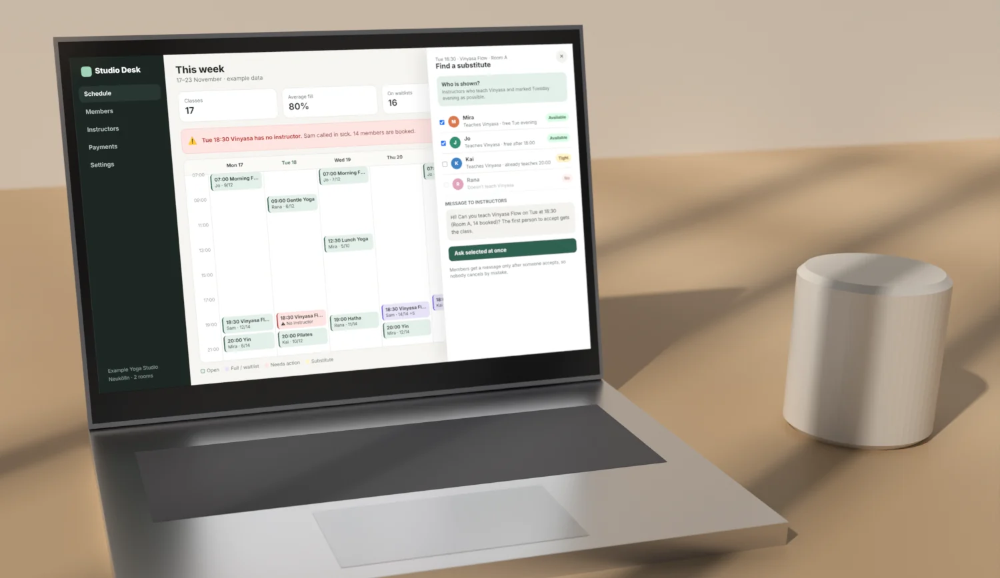
Problem
When an instructor cancels, the owner of a small studio texts people one by one, waits, and then informs every booked member by hand. It can take an hour of messages.
Solution
A week view that puts problems above the calendar, and a substitute flow that asks the right instructors at once and informs members automatically once someone accepts.
What I did
Problem framing, assumptions and a research plan, a proto-persona and journey, user flow, wireframes, desktop UI and components, edge states, and a clickable prototype.
Context
A cancelled class is a phone marathon
Small studios often keep the schedule in one tool, instructor availability in a group chat and members in an email list. When an instructor cancels, the owner has to connect all three by hand, under time pressure, often while teaching another class.
Big studio platforms can do a lot. My assumption is that a small studio uses a fraction of those features. So the product opportunity is depth in one moment, not breadth.
How might we help a studio owner save a class in minutes instead of an hour of messages?
Assumptions
What I believe, and how I would check it
Every B2B tool lives or dies on whether it solves a frequent, painful task. These assumptions decide if this one does.
| Assumption | Why I think so | How I would test it |
|---|---|---|
| Cancellations are the most stressful admin task | More than planning or payments, because they happen at short notice. | Interview 5 studio owners: "Walk me through your worst Monday." |
| Asking several instructors at once is acceptable | "First to accept gets it" could feel unfair to some instructors. | Ask instructors in 2 studios how a group request would feel. |
| Members prefer a substitute over a cancellation | They come for the time slot, not always for the teacher. | Compare cancellations after sub messages vs. cancelled classes in a pilot. |
| Owners work from a laptop at the front desk | Phone is for messages, laptop for the schedule. | Contextual inquiry: spend an evening at a studio front desk. |
People
Show detailsHide details
Who I designed for
Sophie, 38
Owns a two-room yoga studio in Neukölln, teaches 8 classes a week herself, 5 freelance instructors.
“Planning the week is fine. It's the 4 pm message "I'm sick, sorry" that ruins my evening.”
Proto-persona · based on assumptionsGoals
- No class cancelled because of the instructor
- Members informed before they leave home
- Fair treatment of her freelance instructors
Frustrations
- Texting instructors one by one and waiting
- Not knowing who is free without asking
- Writing to 14 members by hand
Context
- Laptop at the front desk, phone in her pocket
- Often teaching while problems come in
- No admin staff
What would help
- See problems before the calendar
- Ask the right people at once
- Automatic member messages
A cancellation today, before Studio Desk
| Message arrives | Finds a sub | Waits | Sub confirmed | Informs members | |
|---|---|---|---|---|---|
| Doing | Reads "I'm sick" at 16:05 | Scrolls the group chat, texts Mira | No reply, texts Jo, then Kai | Mira says yes at 17:10 | Emails 14 members, updates the tool |
| Thinking | "14 people are booked." | "Who even teaches Vinyasa?" | "Should I just cancel?" | "Saved. Now the admin." | "Did everyone see it?" |
| Feeling | |||||
| Opportunity | Alert above the calendar | Filtered list of who can teach | Ask several at once | First accept wins, others told | Members informed automatically |
Principles & flow
Show detailsHide details
Three principles that shaped every screen
The alert sits above the calendar. The owner sees what needs action without scanning the week.
An instructor who is busy is shown with the reason. The owner decides, not the algorithm.
Members get a message only when the class is saved, so nobody cancels too early.
User flow
Four clicks from alert to solved. The branches cover the cases that break simple tools: nobody answers, or two people accept.
Wireframes to UI
Show detailsHide details
From grey boxes to a calm control room
In grayscale I tested one question: is the problem the first thing you see? Colour then got strict meaning: red for action needed, purple for full classes with a waitlist, yellow for a substitute.
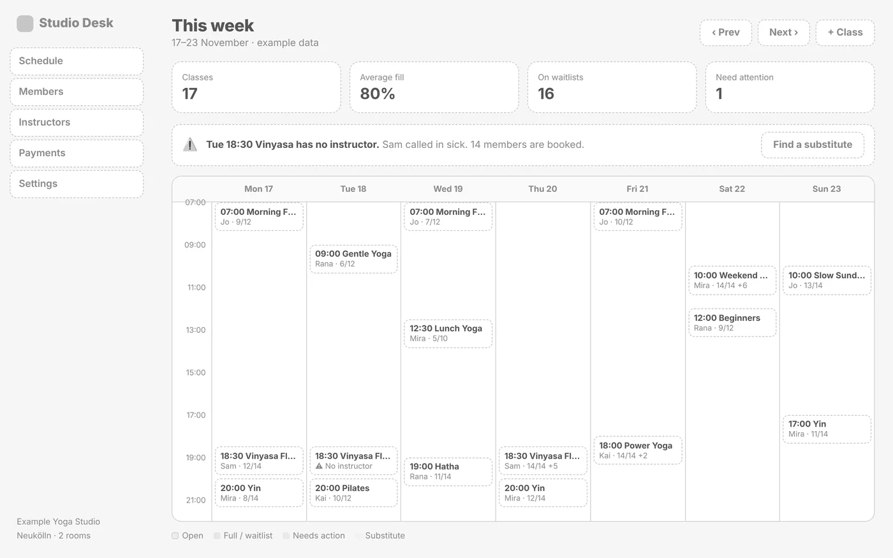
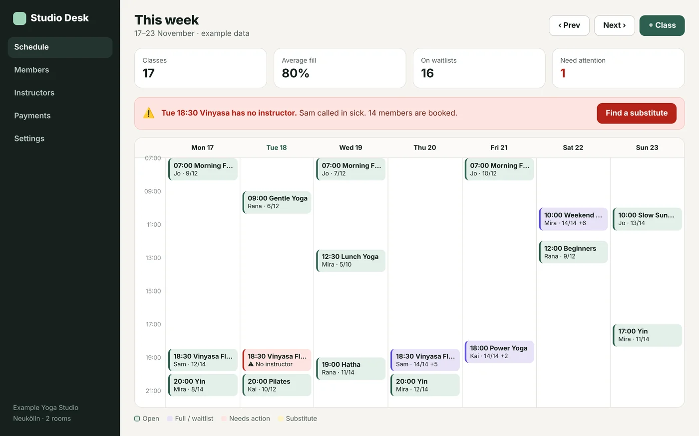
The week view with problems on top
Four numbers give the state of the week. The red bar names the problem in one sentence with one button. The class itself turns red in the calendar, so the link is visible.
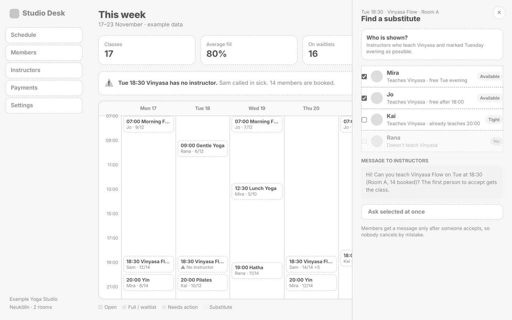
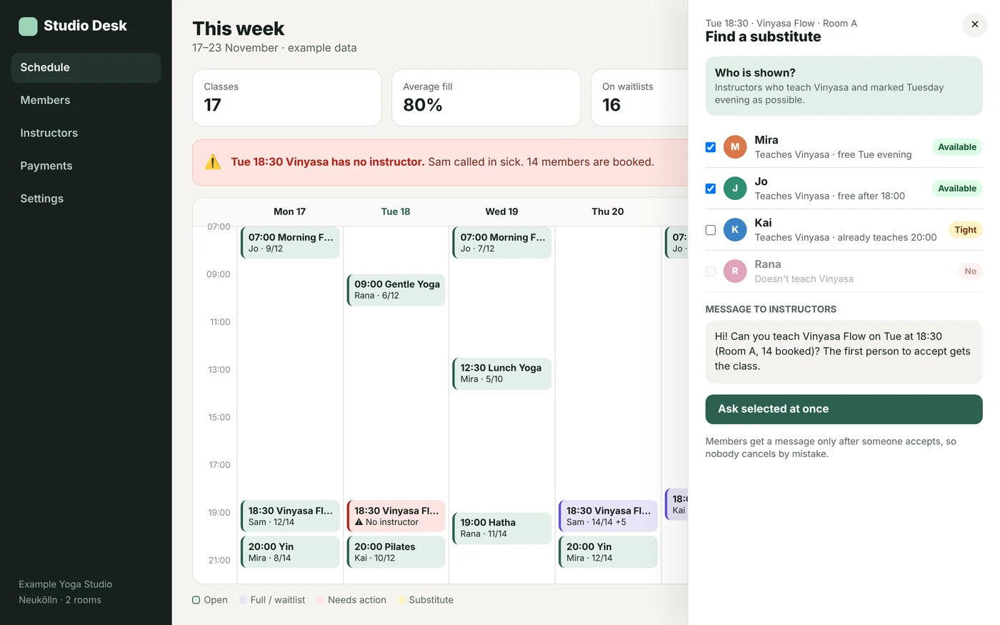
The substitute finder as a side panel
The calendar stays visible, so the owner keeps context. Only instructors who teach the style are listed, with availability in words. The two best matches are preselected, and the message is written for her.
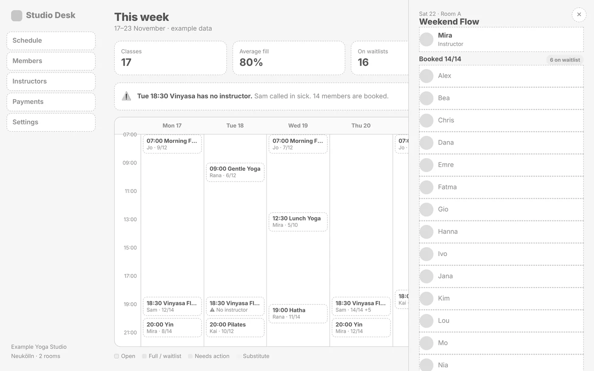
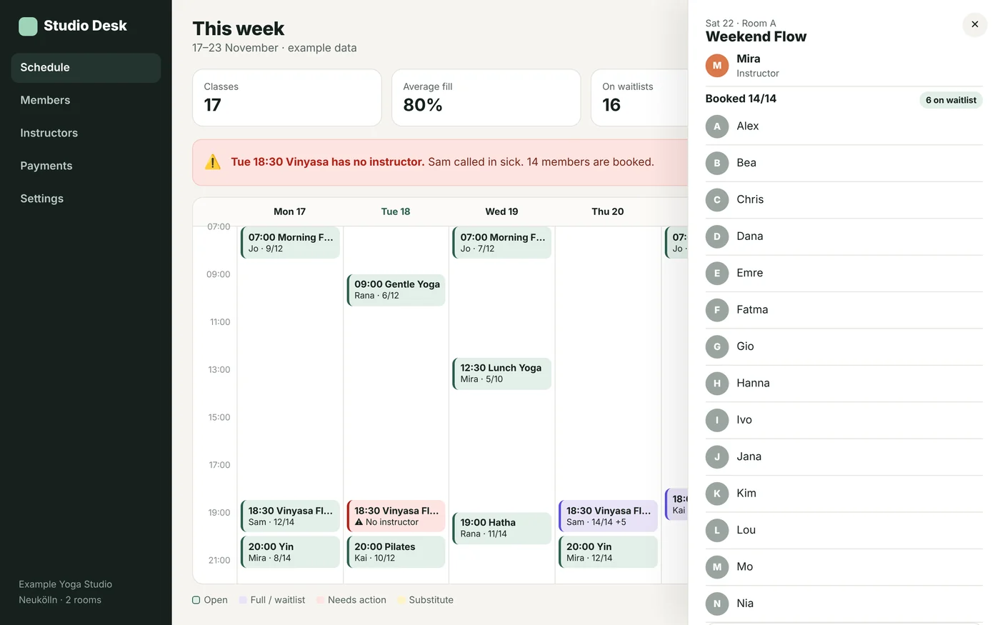
Class detail with the waitlist
The same panel shows bookings for any class. A full class shows its waitlist and explains that it moves up on its own, so the owner doesn't have to.
Key decisions
Decisions and the trade-offs behind them
Ask one instructor at a time, or several at once?
Asking one by one is exactly the slow loop owners have today. The risk is that it feels like a race to instructors, which is why it's an assumption I'd test first.
Hide unavailable instructors or explain?
"Already teaches 20:00" might still work for Kai. The owner knows things the system doesn't, so the tool explains instead of deciding.
When do members hear about it?
An early message makes people cancel a class that will happen. One message with a solution is better than two messages with a problem.
Design system
Show detailsHide details
A quiet system for a busy desk
Warm neutrals and a deep green feel closer to a studio than to an enterprise tool. Status colours are used only for state, never for decoration.
actions, sidebar
open classes
background
alerts
full classes
changed classes
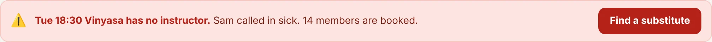
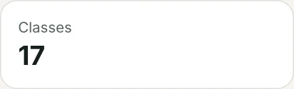
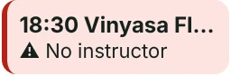
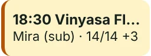
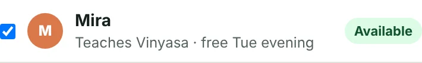
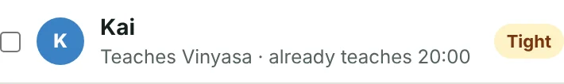
States & access
Show detailsHide details
The states in between
A substitute flow has waiting time in it. The interface should say what is happening while the owner goes back to teaching.
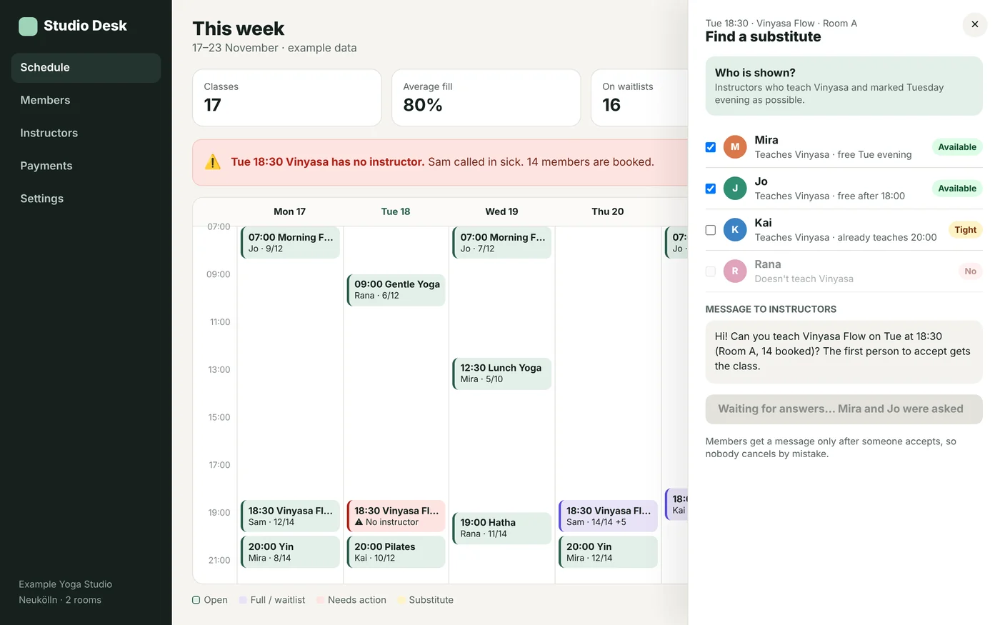
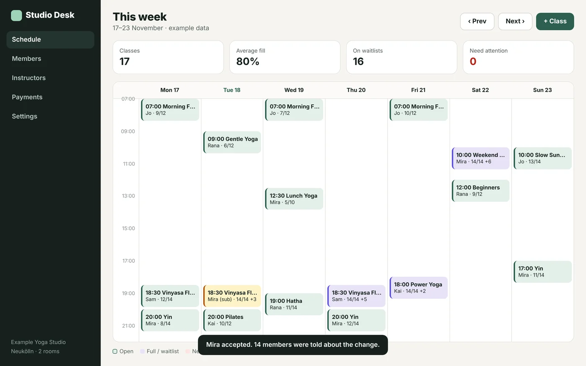
Accessibility
- Not colour aloneEvery class state also has text: "No instructor", "(sub)", "+3" for the waitlist.
- KeyboardClasses are real buttons, the panel opens and closes with the keyboard.
- ContrastText on all status colours meets WCAG AA.
- Calm alertsOne alert bar, no blinking, no sound. Urgent without being stressful.
Final design
The final screens
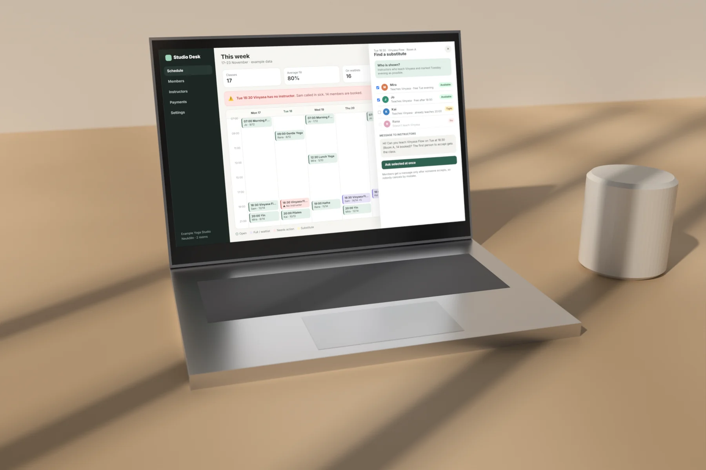
Prototype
Try it yourself
The prototype runs in your browser. It is designed for a desktop screen.
- Click "Find a substitute" in the red alert
- Change who you ask
- Click "Ask selected at once" and wait a moment
- Click any other class to see bookings and the waitlist
Measuring success
What I would measure in a pilot
A pilot with a few small studios. Targets only after a baseline.
| Metric | Why it matters |
|---|---|
| North star: classes saved | Classes with a cancelled instructor that still took place. Directly linked to revenue and member trust. |
| Time to substitute | From the alert to an accepted substitute. The main promise of the product. |
| Owner actions per incident | Clicks and messages the owner needs. Should be close to four. |
| Guardrail: instructor opt-outs | If instructors mute group requests, the flow feels like pressure. |
Reflection
What I learned and what comes next
Designing one moment deeply was harder than designing ten screens wide. Every detail of the substitute flow, like who is preselected or when members are told, is a product decision with a trade-off.
The biggest open question is on the instructor side. The flow is fast for the owner because it asks several people at once. If that feels unfair to instructors, the whole idea needs a different mechanic, so that is where I would start testing.